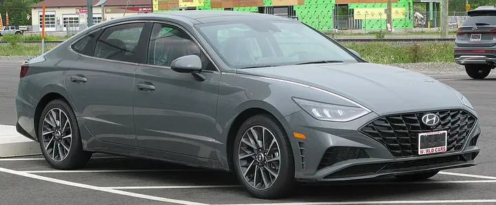
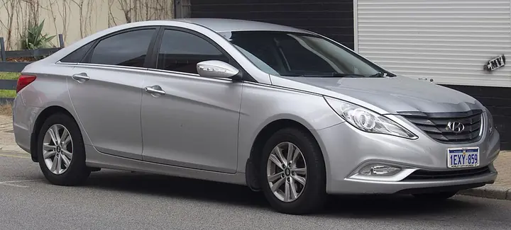
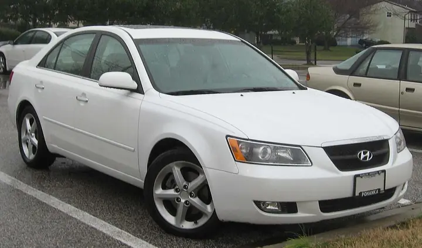
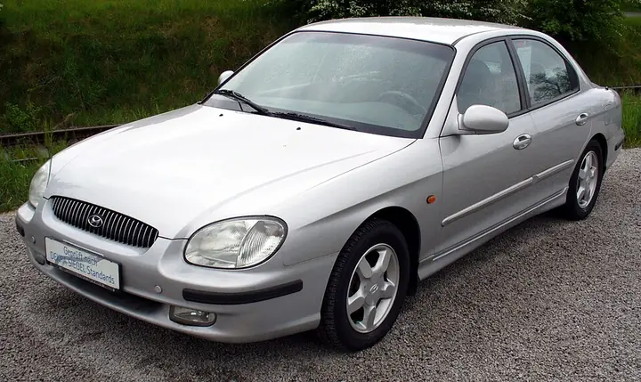
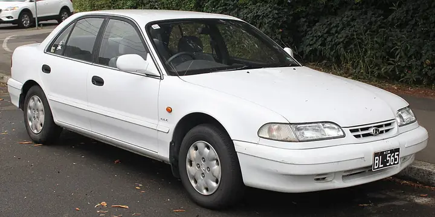
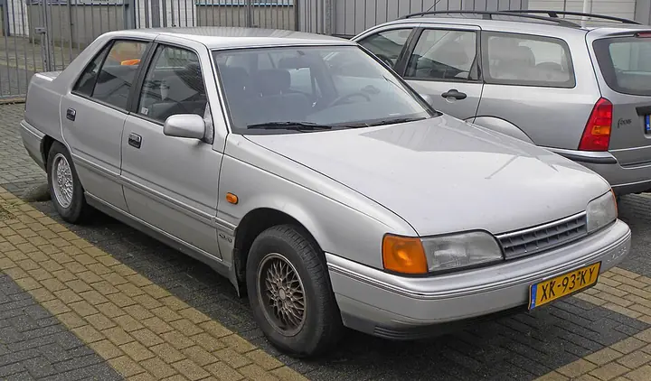
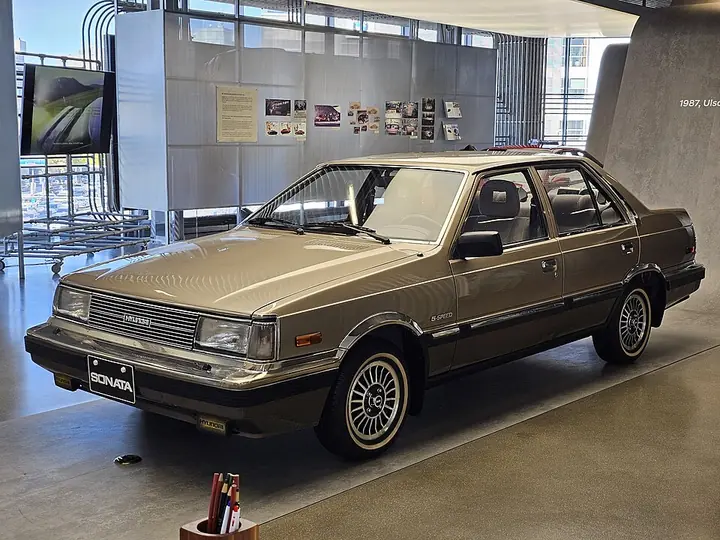

Hyundai Sonata
Eighth generation (DN8; 2019) · 2019–present
Abstract
This generation of the Hyundai Sonata was built 2019–present in South Korea: Asan (Asan Plant), United States: Montgomery, Alabama (HMMA, 2019–2022), China: Beijing (Beijing Hyundai) and other plants. Designed by Luc Donckerwolke, SangYup Lee, Ji-heon Lee.


1Specifications
| Production | 2019–present |
|---|---|
| Model years | 2020–present |
| Assembly | South Korea: Asan (Asan Plant)United States: Montgomery, Alabama (HMMA, 2019–2022)China: Beijing (Beijing Hyundai)Pakistan: Faisalabad (Hyundai Nishat)Kazakhstan: AlmatyVietnam: Ninh Bình (HTMV) |
| Designer | Luc DonckerwolkeSangYup LeeJi-heon LeeKevin KangSong Hyun |
| Platform | Hyundai-Kia N3/N4 |
| Engine | Gasoline:1.5 L Smartstream G1.5 T-GDi I41.6 L Smartstream G1.6 T-GDi I42.0 L Smartstream G2.0 MPi I42.0 L Smartstream G2.0 T-GDi I42.5 L Smartstream G2.5 MPi/GDi/T-GDi I4Gasoline hybrid:2.0 L Smartstream G2.0 GDi I4Gasoline/LPG:2.0 L Smartstream L2.0 LPi I4 |
| Electric motor | Permanent Magnet Synchronous Motor (Hybrid Version) |
| Transmission | 6-speed automatic8-speed automatic7-speed D7UF1 DCT8-speed D8LF1 DCT |
| Battery | 1.62 kWh lithium-ion polymer battery (hybrid) |
| Wheelbase | 2840 mm2890 mm (China) |
| Length | 4900 mm (pre-facelift)4910 mm (facelift)4955 mm (China) |
| Width | 1860 mm |
| Height | 1445 mm |
| Weight | 1388–1610 kg1495–1615 kg (Hybrid)1715–1730 kg (Plug-in Hybrid) |
| Related | Kia K5 (DL3) |
2Versions
- N Line
- Facelift
3Previous generations

_Active_sedan_(2018-08-27)_01.jpg){kind=link}





_GLE_sedan_(23684766980).jpg){kind=link}

_(cropped).jpg){kind=link}

.jpg){kind=link}
4Generation by generation
Length +7% from the first to the last
Y1 19854,578 mm
Y2 19884,680 mm
Y3 19934,700 mm
EF 19984,710 mm
NF 20044,800 mm
YF 20094,820 mm
LF 20144,855 mm
DN8 20194,900 mm
Weight +12% from the first to the last
Y2 19881,240 kg
Y3 19931,236 kg
EF 19981,315 kg
NF 20041,443 kg
YF 20091,451 kg
LF 20141,435 kg
DN8 20191,388 kg